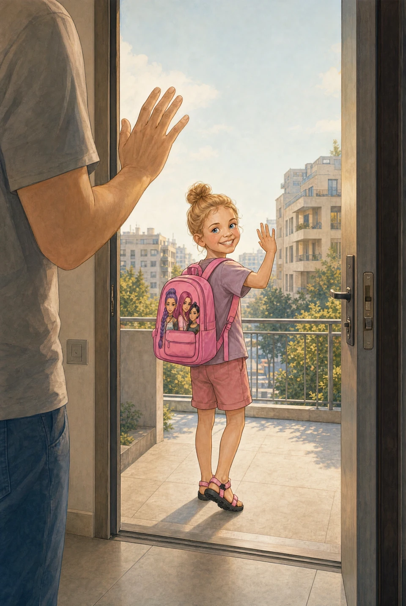
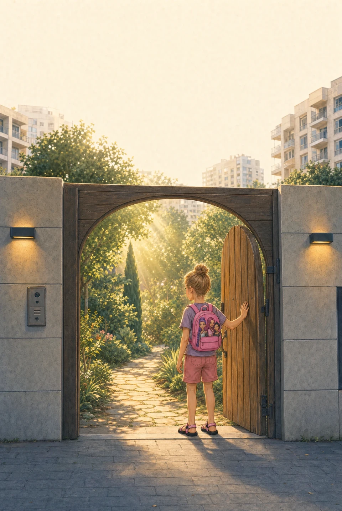

Today is my birthday.
I am nine!
And today, I can walk to school
all by myself.

Dad stands by the door.
“Happy birthday, Shir!” he says.
“Good luck today!”
I smile. “Bye, Dad!”
My pink bag is on my back.
I know the way to school.
Past the crosswalk. Past the tall buildings.
I walk this way every day.
But today, something is different.
Ding!
A tiny bell.
I stop and look around.
A car goes past.
A woman walks her dog.
Where is the bell?
Then I see it.
An old wooden door
in the wall of a building.
That door was not here yesterday.
People walk past the door.
No one looks at it.
But I cannot look away.
Where did it come from?
I take one step closer.
Ding!
I jump.
There it is again!
I put my hand on the handle.
I push.
I pull.
The door will not open.
“Well… happy birthday to me,” I say.
Click.
I am still holding the handle.
But I did not turn it.
The door opens a little.
DING!
The bell is louder now.
It is on the other side.

I push the door wide.
A garden?
Here?
Between all these buildings?
Soft, golden light fills the garden.
It shines on the green leaves.
There is no sound from the street.
Even the air feels different.
I should go to school.
I do not want to be late.
I am not allowed to go in here.
What if it is not safe?
Just one look…
I step inside.
I walk past the green bushes.
Click. Click.
I stop.
Click. Click.
Something is behind that bush.

I look over the bush.
An egg.
An egg as big as my school bag!
Then the egg moves.
Approved text · illustration pending